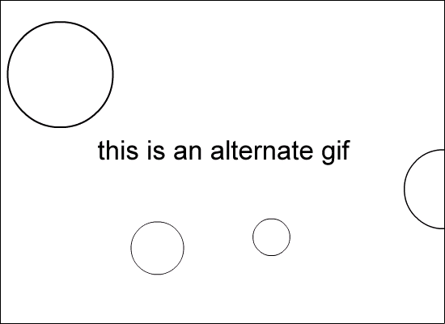

<!DOCTYPE HTML PUBLIC "-//W3C//DTD HTML 4.0 Transitional//EN">

<HTML>
<HEAD><TITLE>moock flash player inspector</TITLE>

<!-- prevent caching in netscape. very important cause netscape tends to mangle cached code -->
<META HTTP-EQUIV="expires" CONTENT="0">
<META HTTP-EQUIV="Pragma" CONTENT="no-cache">

<!-- import the fpi logic from external javascript files -->
<SCRIPT LANGUAGE="JavaScript" type="text/javascript" src="fpi-init.js"></SCRIPT>
<SCRIPT LANGUAGE="JavaScript" type="text/javascript" src="fpi-writevb.js"></SCRIPT>
<SCRIPT LANGUAGE="JavaScript" type="text/javascript" src="fpi-main.js"></SCRIPT>

</HEAD>

<BODY BGCOLOR="#FFFFFF">

<!--############################################################
	IF YOU'RE USING PAGE REDIRECTION, FOLLOW THESE INSTRUCTIONS
	1) put some content here to tell the user what's going on
	while they wait. something like: 
	"detecting macromedia flash, please wait..."

	2) delete everything below this point up to 
	the end body tag </BODY>
	############################################################-->


<SCRIPT LANGUAGE="JavaScript" type="text/javascript" src="fpi-swap.js"></SCRIPT>

<NOSCRIPT>
<!--############################################################################
	HERE WE PROVIDE ALTERNATE CONTENT FOR NON-SCRIPT-SUPPORTING BROWSERS
	OR BROWSERS THAT HAVE THEIR SCRIPTING TURNED OFF...
	############################################################################

	IF YOU ARE USING PAGE REDIRECT, A META REFRESH GOES HERE. FOR EXAMPLE:
	<META HTTP-EQUIV="Refresh" CONTENT="10;URL=noflash.html"> 
	
	IF YOU ARE USING CONTENT SWAPPING, THE VALUE OF THE alternateContent VARIABLE
	SHOULD BE REPEATED HERE. FOR EXAMPLE:
	
	
	-->
</NOSCRIPT>


</BODY>
</HTML>